A self-contained, implementation-grounded guide for engineers and AI agents: product intent, architecture, collection, storage, analytics, search, security, UI, operations, tests, risks, and safe extension points.
github_analysis
main @ 9e63544
2026-09-05 • Europe/Berlin
This PDF is an orientation layer over the repository, not a substitute for source control. It is written so an unfamiliar AI can form a correct mental model before editing code.
Monorepo application, data pipelines, data model, API, web interface, privileged operations, analytics methodology, and local production-like deployment.
It does not embed secrets, database contents, or generated dependencies.
Read from all application modules, eight migrations, tests, Docker assets, shell operations, and current live routes. Screenshots were captured from the local Compose stack.
Runtime counts are a point-in-time observation. Product logic is tied to commit 9e63544. If HEAD differs, run git diff 9e63544..HEAD and revalidate affected chapters.
| Notation | Meaning |
|---|---|
candidate | Cheaply known repository; not necessarily in public directory or deeply hydrated. |
directory / deep | Canonical v2 membership levels. Legacy collection uses candidate/active/pinned. |
| “observed” | Derived from collected GitHub/GH Archive facts, never reconstructed as ground truth. |
01 Cover
02 Document contract
03 Contents
04 Executive summary
05 Product questions and users
06 System context
07 Deployment topology
08 Runtime request paths
09 Repository map
10 Technology stack
11 Domain model and tiers
12 End-to-end data pipeline
13 Source and evidence policy
14 GitHub Search discovery
15 GH Archive processing
16 Classification
17 Reconciliation and selection
18 Deep hydration
19 Incremental synchronization
20 Durable queue state machine
21 Scheduler and job catalog
22 Database overview
23 Hydrated evidence tables
24 Discovery and operations tables
25 Canonical catalog tables
26 Analytics execution
27 Momentum score
28 Community health score
29 Concentration, velocity, confidence
30 Directory selection score
31 Scout scoring
32 AI provider degradation
33 Hybrid search
34 API conventions
35 API v1 endpoint catalog
36 API v2 endpoint catalog
37 Admin endpoint catalog
38 Web application structure
39 Home screenshot
40 Directory screenshot
41 Scout screenshot
42 Compare screenshot
43 Repository dossier screenshot
44 Methodology screenshot
45 Collection screenshot
46 Admin screenshot
47 Security boundary
48 Authentication and CSRF flow
49 Configuration: core and collection
50 Configuration: AI and capacity
51 Local development
52 Docker and proxy deployment
53 Operations and observability
54 Backup, restore, recovery
55 Tests and quality gates
56 Live runtime snapshot
57 Limits, risks, debt
58 Safe extension playbooks
59 AI handoff checklist and index
RepoTrajectory is an explainable open-source repository intelligence system. It continuously builds a bounded evidence base and presents repository discovery, health, momentum, delivery, and contributor-dependency signals through a research console.
Async SQLAlchemy and durable jobs.
Server/client UI with typed fetch layer.
Relational facts plus pgvector.
GitHub REST/Search + GH Archive.
Separate cheap, wide discovery from expensive, narrow historical hydration. Search and GH Archive identify candidates; policy selects a cohort; workers hydrate only that bounded set; analytics store components and evidence alongside scores.
What does this repository do? Is it active? Which technologies and topics define it? Can I discover alternatives by purpose rather than popularity?
Is delivery healthy? Are issues and pull requests resolving? Is work concentrated in too few people? What evidence is stale or weak?
Which projects show adoption acceleration, development cadence, and early promise? What is moving, and why did the system surface it?
| Surface | User question | Evidence |
|---|---|---|
| Home | Where should I begin? | Search, analytical lenses, current Scout picks. |
| Repositories | What matches filters and desired viewpoint? | Catalog metadata, selection scores, deep/scout indicators. |
| Scout | What promising software is not already obvious? | Quantitative activity plus structured AI/fallback rationale. |
| Compare | How do selected projects differ? | Catalog and deep metrics, normalized presentation. |
| Repository dossier | What is the complete case for one project? | Profile, metrics, contributors, history, activity, provenance. |
| Methodology | How were scores produced? | Weights, caveats, evidence semantics. |
| Collection | Is the evidence pipeline current? | Queue, tiers, rate budget, archive and DB telemetry. |
| Admin | How do I safely intervene? | Allowlisted commands, job controls, audit ledger. |
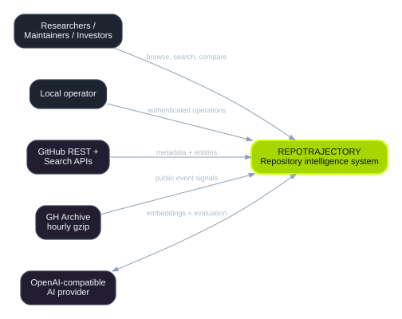
GitHub Search yields recent public software metadata. GitHub REST hydrates repository entities. GH Archive yields public event counts without retaining raw payloads. An OpenAI-compatible endpoint optionally provides embeddings and structured Scout evaluation.
Public users receive read-only research views and APIs. A local operator receives a separate authenticated command surface. RepoTrajectory issues only GET requests to GitHub and does not write back to repositories.
Trust boundary: GitHub, GH Archive, and the AI endpoint are external dependencies. Browser traffic reaches the application through Caddy; PostgreSQL and Redis remain unexposed on the host in the default Compose file.
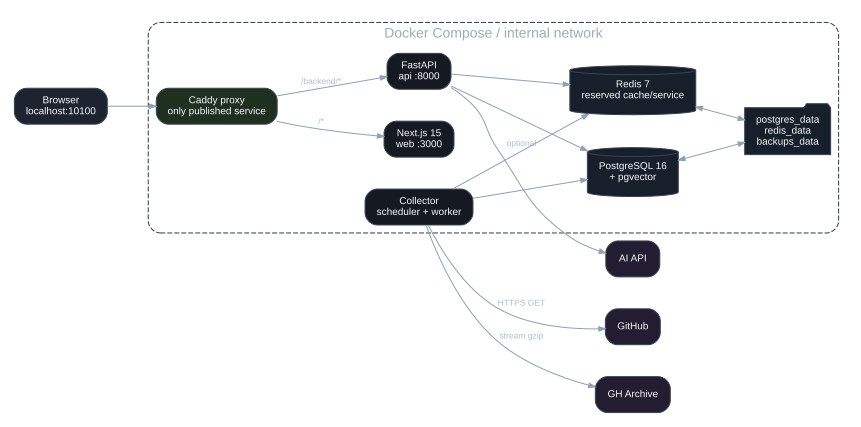
| Service | Responsibility | Reachability / persistence |
|---|---|---|
proxy | Caddy routes UI and /backend/*. | Only published port; default 10100. |
web | Next.js server and client assets. | Private :3000; SSR calls api:8000. |
api | FastAPI v1/v2/admin and OpenAPI. | Private :8000; migrates on startup. |
collector | Scheduler plus one durable-job worker loop. | Private; shares backend image/config. |
postgres | System of record and vector index. | postgres_data, backups_data. |
redis | Provisioned infrastructure. | redis_data; current source does not use it in core paths. |
REDIS_URL, but Settings has no Redis field and current services coordinate through PostgreSQL. Treat Redis as reserved rather than required application state.http://localhost:10100./backend/* to FastAPI after stripping the prefix; all other traffic goes to Next.js./backend.API_INTERNAL_URL, defaulting to http://localhost:8001 outside Compose.AsyncSession.| Path | Purpose and ownership |
|---|---|
| backend/app/api/ | HTTP contracts. routes.py is v1, v2/routes.py is canonical catalog/search/scout, admin.py is privileged. |
| backend/app/services/ | Use-case logic: ingestion, discovery, collector, analytics, catalog, directory, search, Scout, AI, benchmark, admin audit. |
| backend/app/db/models.py | All ORM entities and relational invariants. |
| backend/app/analytics/metrics.py | Pure score transforms and concentration math. |
| backend/app/github/client.py | Rate-aware, retrying, paginated GitHub adapter. |
| backend/alembic/versions/ | Schema history; database changes must be expressed here. |
| backend/tests/ | SQLite-oriented unit/API tests plus provider and migration seams. |
| frontend/app/ | Next.js App Router pages: home, repositories, dossier, Scout, compare, rankings, methodology, collection, admin. |
| frontend/components/ | Interactive clients and reusable visual primitives. |
| frontend/lib/api.ts | Browser/server base selection, TypeScript API types, request helpers. |
| docs/ | Collector, metrics, administration notes and generated project book. |
| run.sh / Makefile | Developer/operations entry points. |
| docker-compose*.yml / Caddyfile | Runtime topology and local proxy contract. |
| analysis/ | Decoupled research workspace; not on the application runtime path. |
| Python | ≥3.12 |
| FastAPI | ≥0.115,<1 |
| SQLAlchemy | async 2.x |
| PostgreSQL driver | asyncpg |
| Migrations | Alembic |
| HTTP client | httpx |
| Vector type | pgvector |
| CLI | Typer |
| Logging | structlog |
| Serialization | Pydantic + orjson dependency |
| Next.js | ^16.3.1 |
| React / React DOM | ^19 |
| TypeScript | ^5.7 |
| Tailwind | ^3.4 |
| Motion | ^13.1.1 |
| Icons | Heroicons 2 |
| Charts | Native SVG components |
pgvector/pgvector:pg16redis:7-alpinecaddy:2-alpineDocker Composenamed volumes
Backend declares strict MyPy, Ruff rules E,F,I,UP,B,ASYNC, pytest-asyncio, and respx. The frontend’s build is the effective type/build gate. Dependency ranges intentionally stay within major versions; lock files are present for both Python (uv.lock) and npm.
Two related models coexist: the original collection/hydration model and the newer canonical catalog model. They are linked but must not be conflated.
RepositoryCandidate is a discovered row. Tier values:
Repository is the deeply hydrated normalized record.
CatalogRepository unifies broad discovery and hydrated facts. Flags/tiers:
Scout, embeddings, provenance, and search documents attach here.
GitHub numeric github_id is the durable external identity; full_name can change on rename/transfer. The GitHub client follows redirects, and catalog/repository upserts store the canonical response identity.
RepositoryCandidate.repository_id ── optional 1:1 ──▶ Repository.id CatalogRepository.repository_id ── optional 1:1 ──▶ Repository.id CatalogRepository.github_id ── parent key ─────▶ search / embedding / scout
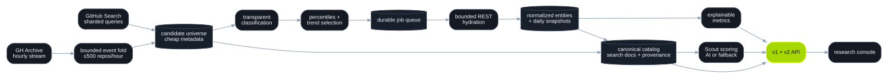
Discovery is designed for tens of thousands of repositories. Metadata and compressed hourly counters are sufficient to classify and prioritize without paying deep REST cost.
Hydration is bounded by time windows and item limits. Only selected or pinned repositories receive commits, PRs, issues, releases, contributors, snapshots, and metrics.
| Source | What is collected | What is not assumed |
|---|---|---|
| GitHub Search | ID, owner/name, description, language, topics, stars/forks, pushed time, fork/archive flags. | Search order is not a quality ranking; coverage depends on query shards and API caps. |
| GH Archive | Hourly counts of Watch, Fork, Push, PullRequest, Issues, and Release events per repository. | No raw payload retention; counters do not equal unique humans or complete repository history. |
| GitHub REST | Canonical repo metadata, default-branch commits, recent issues/PRs/releases, contributor aggregates, languages/topics, README. | No CI reliability, review detail, permissions, tacit maintainer knowledge, or historical stars before observation. |
| Hosted AI | Text embedding and schema-constrained Scout judgment. | It never becomes sole evidence; service can degrade to deterministic fallback. |
Never stored.
Default retention.
Characters bounded; 500-character excerpt.
services/discovery.py builds per-language searches with default eligibility of at least 500 stars and a push within 180 days. Results become RepositoryCandidate rows and collection memberships.
services/directory.py searches language × star-band × freshness shards, allowing low-star projects into the v2 pool. Default scheduled shards cover the first two configured languages and bands 0–10, 11–50, and 51–200.
software with 0.8 confidence for the sharded path.GitHub Search has its own smaller rate bucket and result ceilings. The client preserves a configured reserve and scheduled queries use dedupe keys scoped by language and day.
language:{language} stars:{min}..{max} pushed:>={cutoff} fork:false
Default languages: Python, TypeScript, JavaScript, Go, Rust, Java
Each lagged hourly .json.gz object is streamed, parsed line-by-line, folded into bounded counters, and discarded.
WatchEvent → starForkEvent → forkPushEvent → pushPullRequestEvent → collaborationIssuesEvent → collaborationReleaseEvent → deliveryAdoption and collaboration lead ranking. Push volume is capped as supporting evidence to prevent noisy push streams from dominating. At most 500 repositories per hour are retained by default.
GhArchiveClient.read_hour streams compressed bytes and events.persist_gh_archive_hour maps external repositories to candidates and atomically replaces that hour’s rows.GhArchiveFile records status, counts, bytes, algorithm version, and errors.GH_ARCHIVE_ALGORITHM_VERSION. A formula change must bump the version so the configured hours replay and old projections do not mix with new ones.Primary code: backend/app/services/discovery.py • orchestration: backend/app/services/collector.py
Classification gates expensive hydration and makes rejection explainable. It uses repository metadata, not an opaque model.
| Class family | Examples of signals | Hydration |
|---|---|---|
library, framework, developer_tool, software | Package/framework/tool/app terms, software topics, focused descriptions. | Eligible when other guards pass. |
learning_resource | Awesome lists, tutorials, interview material, courses, roadmaps. | Withheld. |
template | Boilerplate, starter, template signals. | Withheld. |
unclassified | Insufficient metadata or ambiguity. | May receive one-request probe, bounded per reconcile. |
RepositoryClassification carries the label, confidence, eligibility, and a human-readable rejection reason. Candidate rows persist each field so collection UIs and operators can inspect policy outcomes.
Uncertain GH Archive discoveries often lack rich metadata. The reconciler returns a bounded list of candidate IDs; probe_repository fetches one repository record, reapplies classification, then queues another reconcile.
reconcile_collection combines candidate metadata with recent external activity. Seven-day signal percentiles and popularity inform trend_score. Eligible software is ranked; up to collector_active_limit (250 default) becomes active. Pinned entries remain privileged.
New active candidates enqueue hydrate_repository. Existing active repositories become due after their next refresh. Queue priorities are recomputed from tier and trend score.
reconcile_directory_and_cohort selects up to 10,000 eligible catalog rows by selection score, stars, and recency while capping any language at 25%. Empty slots are filled by the next-best entries.
Up to 500 directory rows become deep, preferring already-hydrated repositories. Nonmembers older than 90 days are pruned, and the total pool is capped at 50,000 by deleting lowest-score nonmembers.
legacy priority: pinned = 100 active hydration = 25 + min(70, round(trend_score)) canonical order: selection_score DESC, stars DESC, pushed_at DESC deep preference: hydrated, then selection_score, then stars
RepositoryIngester turns one owner/repo into normalized evidence with conflict-safe updates and strict safety ceilings.
| Resource | Default bound | Persistence |
|---|---|---|
| Repository metadata | One canonical response | repositories; follows renames. |
| Commits | 180 bootstrap days; 5,000 items | Default branch, SHA unique per repository. |
| Issues | 3,000 recently updated | Pull-request-shaped issue payloads excluded. |
| Pull requests | 3,000 recently updated | Created/closed/merged state and authors. |
| Releases | 730 days; 500 items | Draft/prerelease flags retained. |
| Contributors | 200 | Contributor identity plus cumulative counts. |
| Languages/topics | GitHub response | Replacement tables per repository. |
| README | 20,000 characters downstream | Search document + 500-char catalog excerpt. |
A UTC-day repository snapshot is upserted, metrics are recalculated for 30 days, and the hydrated repository is synchronized into the canonical catalog/search document. The candidate receives the resulting repository link and a next refresh timestamp.
repository_sync_states stores resource, time watermark, ETag, Last-Modified, last success/error, and next sync. Subsequent collection uses watermarks to stop pagination once known history is reached.
Repositories, commits, issues, PRs, releases, contributors, languages, and topics use conflict-aware inserts/updates or replacement semantics. A UTC-day snapshot is updated rather than duplicated.
The client tracks limit, remaining, used, reset_at, resource, and per-process request count. The worker persists it in collector_state. When the reserve is reached or GitHub returns exhaustion, the current job is rescheduled after reset rather than failed.
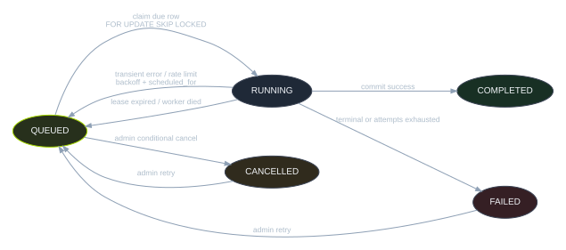
A worker selects one due queued row ordered by priority, schedule, then ID with FOR UPDATE SKIP LOCKED. It writes worker ID, lock time, first start time, and increments attempts before execution.
Every scheduler tick requeues running jobs whose lease exceeds the configured 30-minute default. Transient failures receive backoff; terminal/exhausted jobs remain visible.
| Job type | Default priority | Effect |
|---|---|---|
discover_github | 100 | Daily configured-language legacy search. |
discover_gharchive | 90 | Stream and persist one versioned hour. |
reconcile_directory | 85 | Rebuild canonical directory/deep memberships and prune. |
scout_eval_batch | 80 | Evaluate expired/unevaluated candidates. |
generate_embeddings | 70 | Generate missing/outdated catalog vectors. |
discover_sharded | 60 | Low-star canonical search shards. |
reconcile_collection | 50 | Classify/rank legacy candidates; emit hydrate/probe jobs. |
probe_repository | 45 | One-request metadata clarification. |
hydrate_repository/refresh_repository | 25–95 | Deep evidence, metrics, catalog sync. |
ingest_repository | 100 when pinned | Explicit one-off ingestion by full name. |
maintenance | −10 | Delete expired GH Archive projections/file ledgers. |
Time-bucketed dedupe_key values make repeated scheduler ticks safe. On cancellation, the same key can be reactivated with cleared attempts/locks. The continuous collector alternates scheduling and claiming with a default 10-second polling interval.
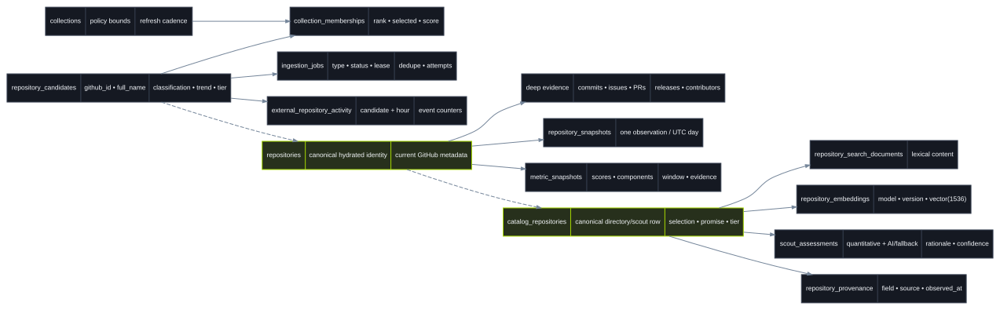
This is a subsystem ER view, not every column. Cascade behavior is concentrated around repository/candidate/catalog children. Numeric GitHub ID connects external identity across broad and deep models.
| Table / ORM | Key fields | Role and constraints |
|---|---|---|
repositories | ID, github_id, owner/name, metadata, last_ingested | Deep canonical GitHub record; external IDs and full name indexed/unique. |
repository_snapshots | repository, captured_at, stars/forks/issues/watchers/contributors | Observed growth baseline; one updated point per UTC day. |
contributors | github_id, login, avatar | Person/account identity. |
repository_contributors | repository + contributor, contributions | Many-to-many cumulative GitHub contribution count. |
commits | repository + SHA, author, committed_at | Default-branch commit evidence; repo-scoped identity fixed in migration 0002. |
pull_requests | repository + number, state, created/closed/merged | Cycle time and acceptance evidence. |
issues | repository + number, state, created/closed | Issue intake and close-time evidence, excluding PR payloads. |
releases | repository + github_id, publish time, draft/prerelease | Stable release cadence. |
repository_languages | repository + language, bytes | Language footprint. |
repository_topics | repository + topic | Normalized GitHub topics. |
metric_snapshots | repo, time, window, 3 scores, JSON components | Append-only derived assessment and full explanation payload. |
Definition: backend/app/db/models.py lines 25–191 • creation evolved from Alembic 0001/0002/0003.
| Table | Purpose | Important invariant |
|---|---|---|
collections | Named policy: candidate/active limits, refresh interval, enabled. | Stable unique slug. |
repository_candidates | Cheap metadata, classification, trend components, tier, refresh date. | Unique github_id, full_name, and optional repository link. |
collection_memberships | Candidate rank, score, selection within a collection. | Composite collection + candidate key. |
ingestion_jobs | Type/status/priority/schedule, lease, attempts, payload, error. | Unique dedupe key; explicit lifecycle timestamps. |
repository_sync_states | Incremental watermarks and conditional headers by resource. | Composite repository + resource key. |
external_repository_activity | Compact hourly event counters and weighted total. | Composite candidate + hour; retained 90 days by default. |
gh_archive_files | Hour status, projection version, event/repo/byte counts, errors. | One ledger row per archive hour. |
collector_state | Small JSON operational facts such as GitHub rate budget. | String key upsert. |
admin_audit_log | Actor/action/target/outcome/remote address/details. | Append-only by application convention; excludes secrets. |
| Table | Payload | Lifecycle |
|---|---|---|
catalog_repositories | Identity, metadata, membership flags, classification, component/selection scores, Scout pointer fields, excerpt, provenance JSON, deep link. | Upserted from broad discovery and deep repository sync. |
repository_search_documents | Name, owner, description, topics text, language/license, README text. | One row per catalog repository; lexical search source. |
repository_signal_snapshots | Stars/forks/issues/watchers, velocity score, source. | Canonical observed time series; separate from legacy snapshots. |
repository_embeddings | Version, model, vector(1536), timestamps. | Regenerated when content/model/version changes. |
scout_assessments | Promise, quantitative and AI scores, confidence, rationale, facts, risk flags, evidence refs, provider identity, expiry/current flag. | Versioned history; one current logical assessment per repo by service convention. |
repository_provenance | Field, source, observed time, details. | Evidence lineage records. |
query_embedding_cache | Normalized query + model → JSON vector. | Avoids repeated provider calls; composite key. |
Vector(1536). Changing AI_EMBEDDING_DIMENSION alone is insufficient; update migration, model, provider expectations, stored rows, and search tests together.calculate_metrics(session, repo, window_days=30) compares a current window with the immediately preceding equal window, then appends a MetricSnapshot.
methodology_version: 3momentum, health, concentrationvelocity, responsiveness, communityfreshness, growthassessment, data_qualityLogins ending in [bot] and the explicit values dependabot, dependabot-preview, github-actions, and pre-commit-ci are automation. Bot commits are excluded from human momentum/health inputs but stored as volume and share.
| Archived | Repository flag is archived. |
| Dormant | No commits/PRs and last commit absent or >90 days. |
| Cooling | Momentum <45 or commit change <−25%. |
| Advancing | Momentum and health both ≥65. |
| Stable | All other cases. |
Question: is development and community activity accelerating? Every component is clamped to 0–100.
| Component | Transform | Weight |
|---|---|---|
| Star growth | 50 + 50·tanh(star_rate·4) | 25% |
| Contributor growth | 50 + 50·tanh(contributor_rate·3) | 20% |
| Commit acceleration | 50 + 50·tanh(ratio_change(current, previous)) | 25% |
| PR acceleration | Same acceleration transform | 20% |
| Release cadence | 100·(1−exp(−releases_per_month/2)) | 10% |
ratio_change(current, previous): previous > 0 → (current − previous) / previous previous = 0 and current > 0 → +1.0 both zero → 0.0
Star and contributor growth use an actual snapshot at or before the start of the window. If none exists, both components are excluded and remaining weights re-normalize. If there is also no current commit, PR, or release evidence, momentum is explicitly forced to 0.
Question: is the community active, responsive, and able to ship? Scale features use diminishing returns so raw project size does not dominate.
| Component | Transform | Weight |
|---|---|---|
| Active human contributors | 100·(1−exp(−contributors/12)) | 20% |
| Issue resolution | 100·exp(−median_close_hours/(72·4)); missing → 0 | 15% |
| PR merge time | 100·exp(−median_merge_hours/(48·4)); missing → 0 | 15% |
| PR merge rate | Merged / resolved PRs × 100 | 20% |
| Stable release cadence | 100·(1−exp(−releases_per_month/2)) | 10% |
| Recent human commits | 100·(1−exp(−commits_per_week/15)) | 20% |
Cycle-time cohorts are selected by resolved during the window, reducing recent-open cohort bias. Issue close time is not first-response time; PR merge time is not review latency. Acceptance rate can encode deliberate governance strictness, not only health.
top_1_share = largest contributor count / total top_3_share = three largest counts / total HHI = Σ(each contributor share²) risk = 100 × (0.45·top_1 + 0.25·top_3 + 0.30·HHI) effective_contributors = 1 / HHI
Basis is recent human commits. If none exist, cumulative GitHub contribution counts are used and the basis is marked. This is not a literal bus factor: it does not know permissions, knowledge ownership, or succession.
Current/previous commits and PRs, merged PRs, issues opened/closed, net issue flow, stable releases, per-week/month normalized rates, and automated commit volume/share.
Last commit/release timestamps and days since each. Repository dossier and assessment use these to avoid presenting stale evidence as current.
min(100, 25 min(current evidence events, 150) / 150 × 50 min(snapshot span days, window days) / window days × 25)
The 25-point base means “confidence” is a coarse coverage indicator, not statistical certainty. Sample sizes remain separate.
services/directory.py computes a 0–100 score from broad evidence. The score selects directory membership; it is not the same as deep health or Scout promise.
| Component | Formula / behavior | Weight |
|---|---|---|
| Activity | min(100, 20 + activity_count·2.5) | 35% |
| Popularity | min(100, log1p(stars)·8 + log1p(forks)·4) | 30% |
| Freshness | max(0, 100 − days_since_push); missing defaults 20 | 20% |
| Maintenance metadata | 50 base +20 license +15 meaningful description +15 at least two topics | 15% |
The catalog row also stores individual activity_score, popularity_score, freshness_score, and maintenance_score fields. Selection then applies a language diversity cap to prevent one ecosystem from consuming more than 25% of target slots, followed by a fill pass.
CatalogRepository.selection_score, not only calculate_selection_score.Scout seeks promising active software with no minimum star threshold. It combines deterministic evidence (70%) and structured provider evaluation (30%).
| Quantitative component | Construction |
|---|---|
| Adoption acceleration | 20 base + 15/star event + 10/fork event + bounded log-star term. |
| Development cadence | 30 base + 3/push event + 5/PR event. |
| Freshness | 100 − 1.5 per day since push; missing 20. |
| Contributor breadth | 25 base + forks, PR events, issue events. |
| Release activity | 20 base + 35/release event. |
| Maintenance responsiveness | 50 base; deep merged/closed evidence can raise it. |
quantitative = .25 adoption + .20 cadence + .15 freshness
+ .15 breadth + .10 releases + .15 maintenance
promise = .70 quantitative + .30 provider_overall_score
Separate confidence accumulates evidence presence: description .20, language .15, license .15, ≥2 topics .15, any recent events .20, ≥5 stars .15; bounded to 0.20–1.00.
Guardrails exclude forks, archived projects, known non-software classifications, and projects inactive for more than 180 days. Assessments expire after seven days and retain provider/prompt identity plus evidence references.
AIProvider exposes embedding generation, structured Scout evaluation, availability, and model identity. ScoutAIEvaluation requires an overall score, breakdown, rationale, surfaced reason, facts, uncertainty, risks, model, and prompt version.
OpenAIProvider uses the OpenAI-compatible base URL, bearer key, embedding endpoint, and chat-completions JSON response. Default base URL targets Google’s OpenAI-compatible Gemini endpoint.
When no effective key exists or provider access fails in supported paths, deterministic heuristics generate embeddings/evaluation behavior. The v2 health route reports degraded status and semantic_available tells search consumers what ran.
get_ai_provider selects hosted behavior only when GEMINI_API_KEY or AI_API_KEY is configured; Gemini key wins.
gemini-3.8-flash.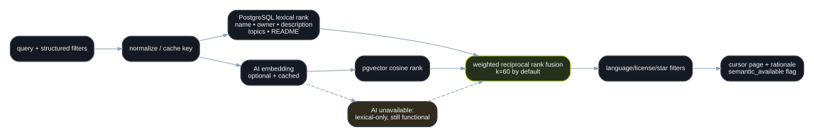
Searches normalized catalog text across full name, name, owner, description, topics, language/license, and README document fields. Structured filters are applied in SQL.
Normalizes query, consults query_embedding_cache, requests an embedding if needed, and ranks catalog vectors by pgvector distance.
Rank lists combine through weighted reciprocal rank fusion with default k=60. Pagination uses a URL-safe base64 encoding of an offset. Responses include interpreted filters, rationale, evidence freshness, and an explicit semantic-availability flag.
/health: process liveness./api/v1: legacy repositories, analytics, collection, admin./api/v2: canonical directory, profile, search, Scout, facets, health./backend.Async session dependency is request-scoped. Missing repositories produce 404; invalid parameters produce FastAPI 422. Most read responses are Pydantic-shaped. Admin failures use 401/403/409 as appropriate.
items, next_cursor, and total_count.cache: "no-store".browser: /backend SSR in Compose: API_INTERNAL_URL=http://api:8000 SSR local: http://localhost:8001
| Method and path | Purpose / key parameters |
|---|---|
GET /repositories | Hydrated rows; search, tier, offset, limit≤500. |
GET /repositories/{owner}/{repo} | One hydrated summary. |
GET …/metrics | Latest score for window 7–365; optional refresh recalculates. |
GET …/history | Observed snapshots; days≤3650. |
GET …/contributors | Top contributor rows; limit≤100. |
GET …/activity | Weekly commits, merged PRs, closed issues, releases; 1–104 weeks. |
GET /rankings/{ranking} | momentum, health, or concentration order; window and limit. |
GET /collections | Collection policy and member counts. |
GET /candidates | Filter legacy candidates by tier/language/class/search/eligible. |
GET /trending | Highest legacy trend candidates. |
GET /collector/overview | Tier/class/job/rate/archive/DB summary. |
GET /collector/jobs | Recent job ledger, optional status. |
POST /collector/schedule | Legacy mutation route; runs scheduling. |
POST /collector/repositories | Queue/pin an owner/repo. |
POST /collector/jobs/{id}/retry | Retry eligible job. |
/admin router. Before public deployment, verify their current dependencies and either protect or remove them; do not assume the admin chapter automatically covers these routes.| Method and path | Contract |
|---|---|
GET /repositories | Canonical directory envelope. Filters: language, license, tier, directory_only, star range. Lenses: developer/maintainer/investor. Sort: selection, stars, pushed, promise, activity, growth, health, name; order asc/desc; cursor; limit 1–100. |
GET /repositories/{owner}/{repo} | Unified profile: catalog row, current Scout card, optional deep evidence (metric, contributors, history), provenance, README excerpt. |
POST /search | Body: query, optional filters/cursor/limit. Returns fused items, interpreted filters, rationale, freshness, semantic status. |
GET /scout | Current Scout feed with language, minimum promise, maximum stars, cursor, and limit controls. |
GET /facets | Language, category, license facets plus evidence-level and freshness counts. |
GET /health | Database and AI availability plus candidate/directory/deep counts and degraded features. |
List rows include a computed lens_metrics object. The UI uses it to rename and reorder evidence for developer, maintainer, or investor/growth perspectives without duplicating the underlying catalog.
| Method and path | Authorization | Effect |
|---|---|---|
POST /admin/auth/login | Credentials + rate limiter | Set signed cookie; return CSRF and expiry. |
GET /admin/auth/session | Session cookie | Return current session details. |
POST /admin/auth/logout | Full mutation checks | Clear cookie; audit sign-out. |
GET /admin/summary | Session cookie | Detailed operations summary. |
GET /admin/audit | Session cookie | Latest append-only audit records, limit≤500. |
POST /admin/commands/{command} | Session + Origin + Fetch Metadata + CSRF | Allowlisted scheduler, reconcile, reclassify, or maintenance enqueue. |
POST /admin/jobs/{id}/cancel | Full mutation checks | Conditional cancel of queued/failed job. |
schedulereconcilereclassifymaintenance
Repository queueing and retry behavior are surfaced in the admin console through protected calls where implemented; no endpoint exposes shell, SQL, arbitrary job type, Docker socket, or raw environment data.
| Route | Rendering / primary component | Responsibility |
|---|---|---|
/ | Async server page + cards | Search entry, lenses, Scout preview, platform explanation. |
/repositories | Server page → RepositoryDirectory | Faceted canonical catalog, lens/sort/search controls. |
/repositories/[owner]/[repo] | Async server dossier | Unified profile with deep/scout/evidence-aware sections. |
/scout | Server shell → ScoutFeed | Promise filters and expandable explanations. |
/compare | Server seed → CompareExplorer | Select and compare repositories. |
/rankings | Server seed → RankingWorkspace | Legacy metric ranking workspace. |
/methodology | Static server content | Metric and evidence governance. |
/collection | CollectorConsole | Read-only queue/source observability. |
/admin | AdminConsole | Login and privileged controls. |
AppNavigation provides global search, links, API docs, admin, and product tour. FirstRunTutorial stores tutorial state in browser storage. MotionShell animates route entry. Tailwind defines a black/white chartreuse visual language; semantic status still needs text, not color alone.
frontend/lib/api.ts is the central contract. Pages mix server fetching with client-side re-fetching. Errors generally degrade to empty/null presentation; changing this behavior should include explicit user-facing failure states.
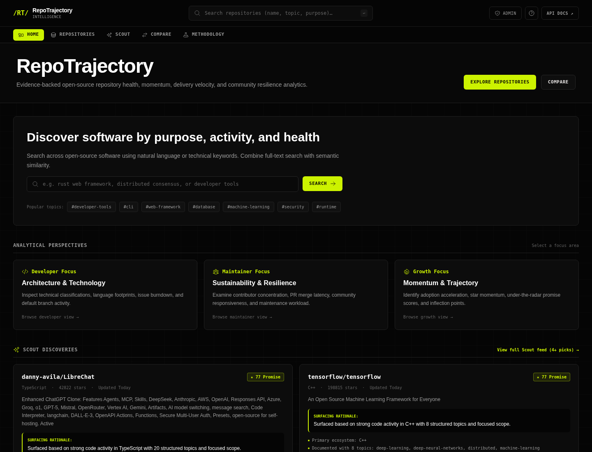
Live capture, 1440×1100. The page leads with natural-language search, then developer/maintainer/growth lenses and Scout discoveries. Global navigation exposes the public research paths and separates admin access.
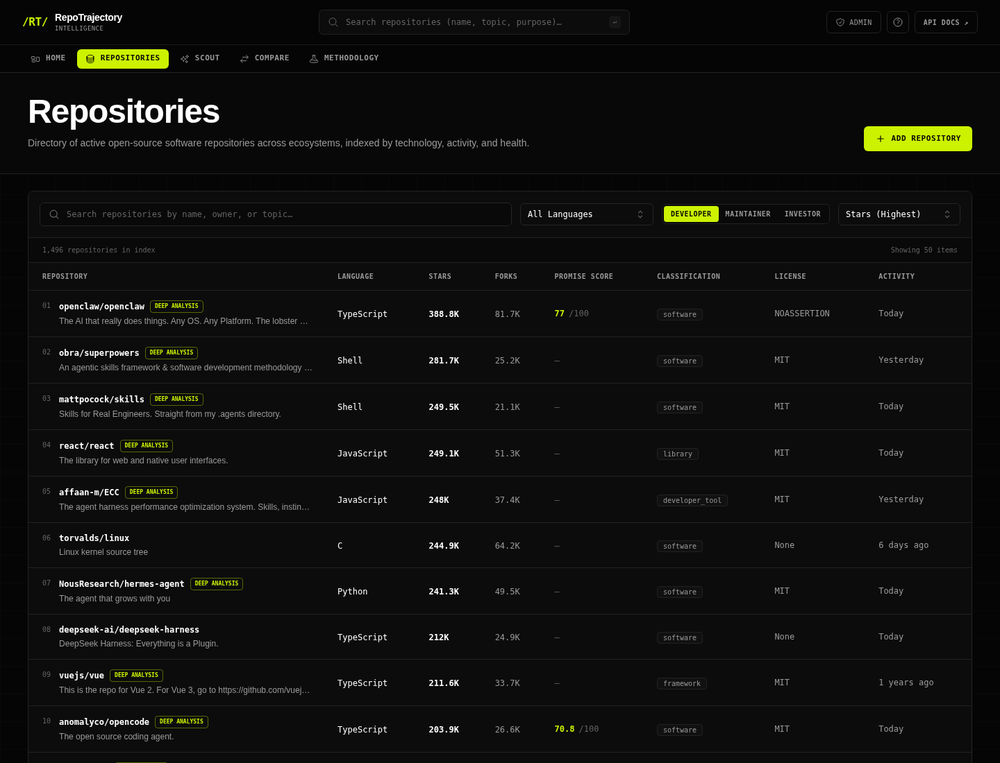
Live capture. RepositoryDirectory manages query, language/license/category/evidence filters, lens, sorting, pagination, and expandable repository evidence. Results come from v2 catalog endpoints.
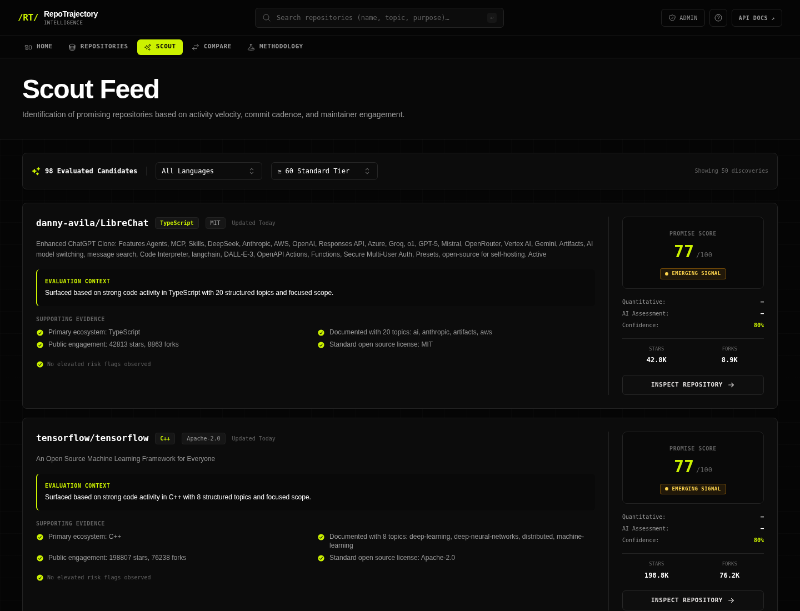
Live capture. Cards surface promise score, confidence, rationale, supporting facts, uncertainty, and risks. The feed is a decision aid; the explanation payload is as important as rank.
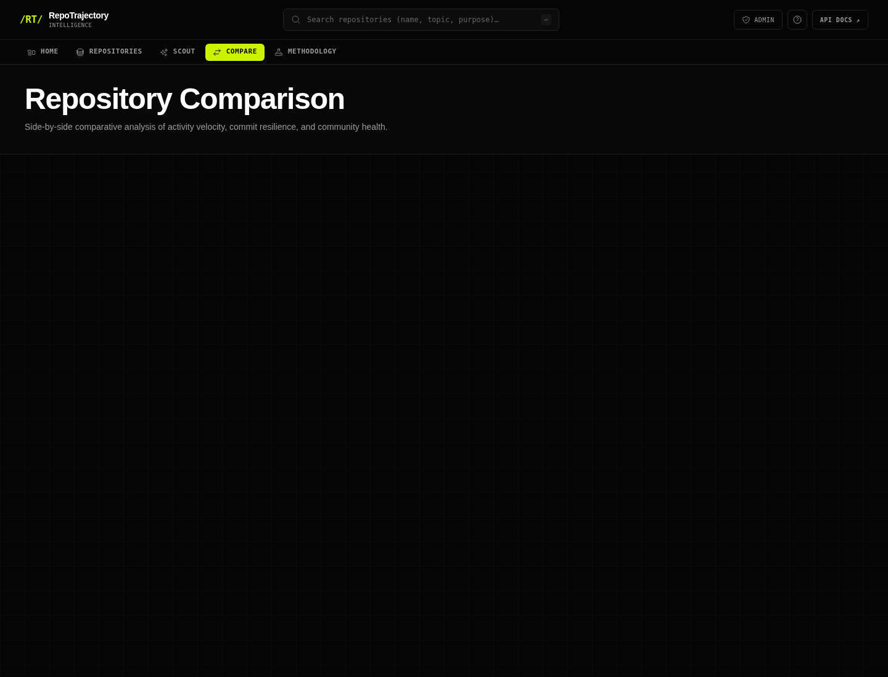
Live capture. CompareExplorer lets the user choose repositories and aligns metadata and analytical signals. Empty state is intentionally useful rather than preselecting a potentially misleading comparison.
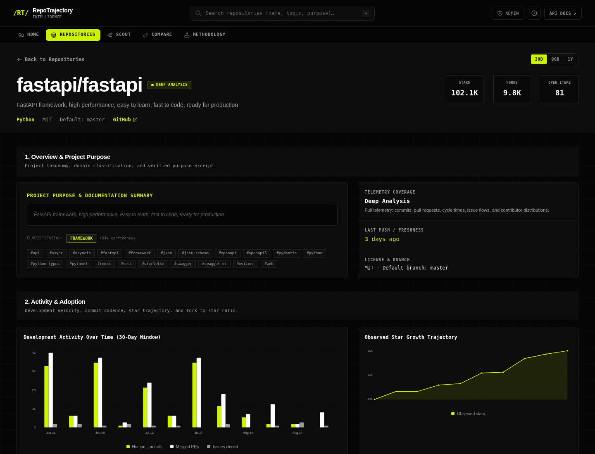
Live capture for fastapi/fastapi. The dossier merges catalog identity, Scout evidence, optional deep metrics, historical snapshots, contributors, README excerpt, and provenance. Missing deep evidence is represented explicitly.
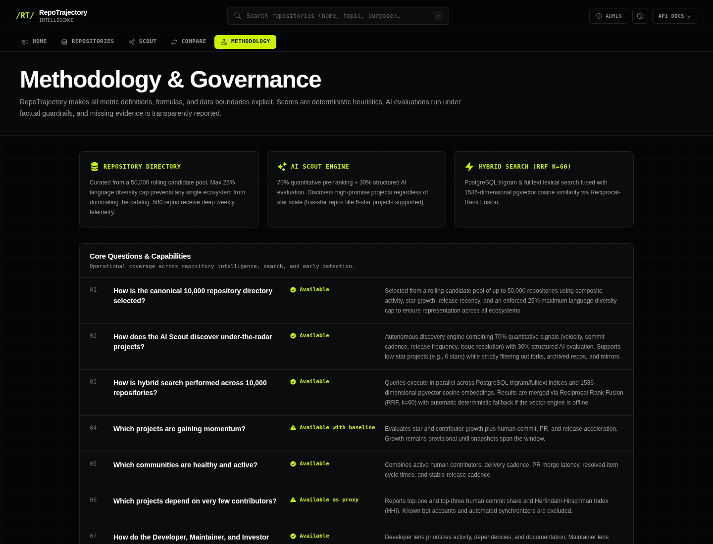
Live capture. This page makes scoring weights, evidence assumptions, caveats, and status semantics accessible to users. Any formula change should update pure metric code, tests, this page, and docs/metrics.md together.
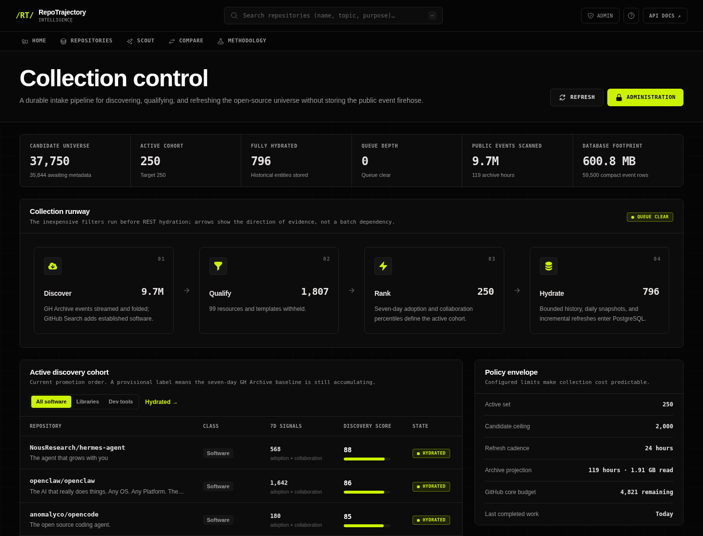
Live capture. The public collection screen is read-only and summarizes tier/classification distribution, durable jobs, archive processing, rate budget, database footprint, and latest completion.
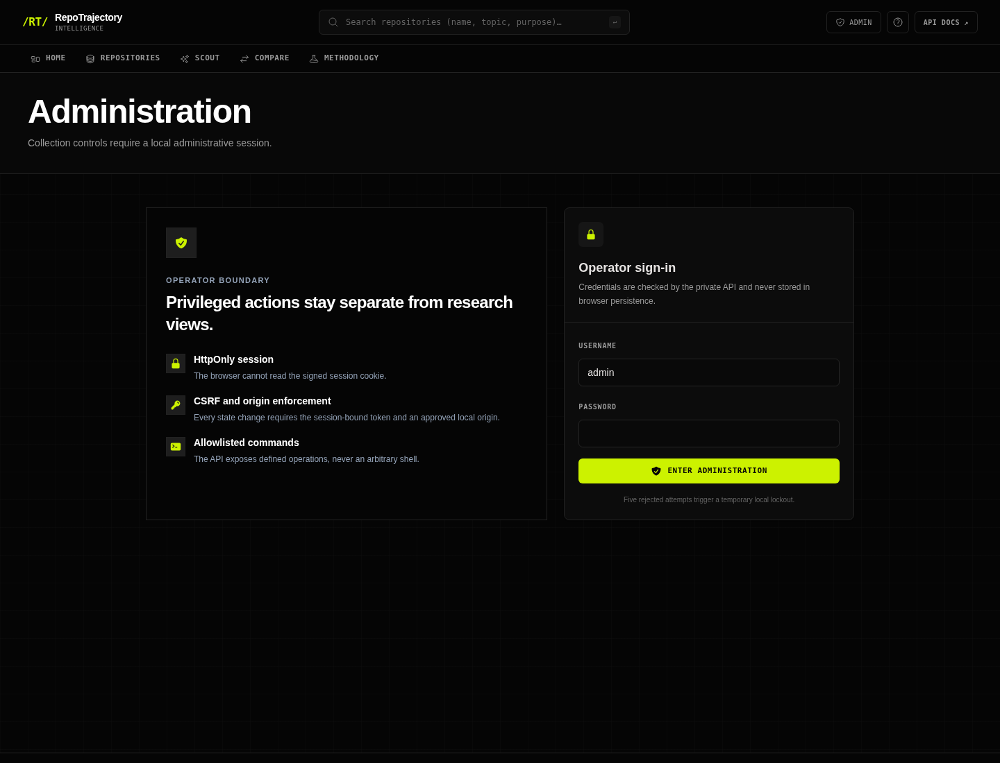
Live capture of the unauthenticated boundary. Credentials are never embedded in this document. After login, the console offers allowlisted queue/maintenance controls and audit inspection.
| Threat | Control |
|---|---|
| Credential theft from browser storage | Eight-hour HMAC-signed session in HttpOnly, SameSite=Strict cookie; password/session/CSRF never in local storage. |
| Password disclosure | PBKDF2-HMAC-SHA256, 600,000 iterations, random 128-bit salt; setup writes only hash. |
| CSRF / cross-site mutation | Session-bound random CSRF header, exact Origin/Referer allowlist, Fetch Metadata rejection. |
| Brute force | Five rejected logins per observed client address trigger 15-minute rolling lockout. |
| Privilege escalation | Fixed command allowlist; no shell, SQL, Docker socket, or arbitrary job submission. |
| Race with worker | Status-conditional cancel/retry. |
| Secret leakage in audit | Structured audit excludes passwords, tokens, CSRF, GitHub/AI keys, signing secret. |
| Clickjacking/sniffing | DENY frame, nosniff, no-referrer, permissions restrictions, CSP. |
ADMIN_SECURE_COOKIES=false. For HTTPS exposure, set secure cookies and exact HTTPS allowed origins; replace default database credentials and conduct a review of legacy v1 mutation routes.Use the least-privileged read-only GitHub token. Public collection needs GET access only; never grant repository deletion, hooks, workflow, packages, organization administration, or broad write scopes.
Session contains username, issue/expiry times, and CSRF value. It is base64-url encoded and HMAC authenticated. Decode verifies structure, signature with constant-time comparison, username, and expiration.
./run.sh admin-password prompts without echo, hashes the new password, generates a new session-signing secret, writes .env mode 0600, and invalidates all earlier sessions.
Cache-Control: no-store.| Environment / field | Default | Meaning |
|---|---|---|
DATABASE_URL | localhost:15432 dev URL | Async PostgreSQL connection; Compose overrides host. |
GITHUB_TOKEN | none | Read-only token; needed for practical quota. |
GITHUB_API_URL | api.github.com | REST base; injectable for tests. |
GITHUB_REQUEST_INTERVAL_SECONDS | 0.15 | Serialized minimum spacing per client. |
GITHUB_RATE_LIMIT_RESERVE | 100 | Preserved budget. |
INGESTION_BOOTSTRAP_DAYS | 180 | Initial commit horizon. |
INGESTION_RELEASE_DAYS | 730 | Release horizon. |
INGESTION_*_LIMIT | 200 / 5000 / 3000 / 3000 / 500 | Contributors, commits, issues, PRs, releases. |
COLLECTOR_POLL_SECONDS | 10 | Idle loop interval. |
COLLECTOR_LEASE_MINUTES | 30 | Worker-death recovery threshold. |
COLLECTOR_CANDIDATE_LIMIT | 2000 | Legacy policy target/ceiling. |
COLLECTOR_ACTIVE_LIMIT | 250 | Legacy recurring hydration cohort. |
COLLECTOR_ACTIVE_REFRESH_HOURS | 24 | Recurring deep refresh cadence. |
COLLECTOR_CANDIDATE_REFRESH_HOURS | 168 | Candidate metadata cadence. |
| Environment / field | Default | Operational impact |
|---|---|---|
DISCOVERY_LANGUAGES | Python, TS, JS, Go, Rust, Java | Legacy queries and scheduled canonical shards. |
DISCOVERY_MIN_STARS | 500 | Legacy Search intake only. |
DISCOVERY_PUSHED_WITHIN_DAYS | 180 | Freshness eligibility. |
GH_ARCHIVE_HOURS_BACK / LAG_HOURS | 6 / 3 | Hourly replay window and source delay. |
GH_ARCHIVE_TOP_REPOSITORIES_PER_HOUR | 500 | Projection bound. |
GH_ARCHIVE_RETENTION_DAYS | 90 | Activity/file ledger retention. |
AI_BASE_URL | Gemini OpenAI-compatible URL | Provider endpoint. |
GEMINI_API_KEY / AI_API_KEY | none | Hosted provider; Gemini takes precedence. |
AI_EVALUATION_MODEL | gemini-3.8-flash | Scout structured judgment. |
AI_EMBEDDING_MODEL | text-embedding-3-small | Semantic search model label. |
DIRECTORY_LIMIT / DEEP_COHORT_LIMIT | 10000 / 500 | Canonical membership targets. |
CANDIDATE_POOL_LIMIT / RETENTION_DAYS | 50000 / 90 | Broad-pool bounds. |
DIRECTORY_LANGUAGE_CAP | 0.25 | Maximum initial share per language. |
SCOUT_DAILY_EVAL_LIMIT | 100 | Daily assessment workload. |
SEARCH_RRF_K / SEARCH_DEFAULT_LIMIT | 60 / 50 | Fusion damping and response size. |
The checked-in .env.example is the operator template. This book intentionally omits runtime credential values.
cp .env.example .env # set a read-only GITHUB_TOKEN ./run.sh # lifecycle ./run.sh logs ./run.sh down ./run.sh admin-password
run.sh checks host ports 10100–10110, remembers/reuses the current app port, builds/starts Compose, waits for readiness, and prints UI, collection, admin, and API-doc links.
docker compose -f docker-compose.yml -f docker-compose.dev.yml up -d postgres cd backend python -m venv .venv && source .venv/bin/activate pip install -e '.[dev]' alembic upgrade head uvicorn app.main:app --reload --port 8001 # second shell python -m app.cli collector
cd frontend npm install npm run dev
The development proxy sends /backend to localhost:8001. PostgreSQL is exposed only by the dev override on host port 15432.
git status --short, preserve unrelated user changes, run the smallest relevant tests, and use Alembic for schema changes.alembic upgrade head, then Uvicorn.All services join internal; application services needing outbound access also join public. Only proxy publishes a host port. Database and API use Compose expose, not host ports.
:80 {
handle_path /backend/* { reverse_proxy api:8000 }
handle { reverse_proxy web:3000 }
}
postgres_data holds the database, backups_data holds backup files, redis_data holds Redis state, and Caddy has data/config volumes. Stopping containers is recoverable; deleting volumes is destructive.
| Command | Use |
|---|---|
python -m app.cli schedule | Run one scheduler tick. |
… collector [--once] | Continuous worker or one job. |
… collector-status | Queue, archive, DB, rate overview. |
… enqueue owner/repo | Pin and prioritize one repository. |
… ingest owner/repo | Immediate one-off ingestion. |
… ingest-config ../repositories.yml | Ingest configured list. |
… classify-candidates | Reapply transparent eligibility. |
… reconcile-directory | Rebuild canonical memberships. |
… scout-eval --limit N | Run Scout assessments. |
… generate-embeddings --limit N | Populate catalog vectors. |
… discover-sharded … | Run explicit catalog shard. |
… seed-benchmark / benchmark-latencies | Create/measure scale scenarios. |
Oldest queued age, failed jobs and errors, latest completion, GitHub remaining/reset, last GH Archive hour and failure, database size/write latency, directory/deep counts, API latency, AI degradation, snapshot span, and evidence sample sizes.
scripts/backup.sh produces timestamped compressed custom-format pg_dump files in /backups/daily. Sundays are copied to weekly.
scripts/restore.sh accepts a backup and optional --rehearsal. Rehearsal creates an isolated database, restores, checks key table counts, and drops it.
--clean --if-exists.--no-owner --no-acl.| Data | Recoverability |
|---|---|
| GitHub entities | Replayable within current API availability and configured bounds. |
| GH Archive compact hours | Replayable from public archive; algorithm version controls replacement. |
| Observed historical snapshots | Not reconstructable exactly after loss; backups matter. |
| Job/audit history | Operational evidence; not fully recreated from sources. |
| Embeddings/Scout | Regenerable if provider/config remains available. |
pg_restore … || true can mask restore errors. A production recovery procedure should inspect command status/logs and validate more than four counts before declaring success.cd backend PYTEST_DISABLE_PLUGIN_AUTOLOAD=1 \ pytest -p pytest_asyncio.plugin ruff check app tests alembic/versions mypy app cd ../frontend npm run build cd .. docker compose config --quiet
Fixtures use async SQLite for fast service/API isolation and dependency override. PostgreSQL-specific behavior—pgvector, SKIP LOCKED, dialect inserts, indexes, and migration execution—requires integration validation against the real Compose database.
| Gate | Observed result on 2026-09-05 |
|---|---|
| Frontend production build | Pass; Next.js compiled, type-checked, and generated all routes. |
| Compose configuration | Pass. |
| Focused admin-auth tests | 3 passed. |
| Full backend pytest | Incomplete; advanced four tests, then exceeded a 120-second diagnostic timeout. |
| Ruff / strict MyPy | Failing baseline: 120 lint findings; 9 type errors in 4 source files. |
Observed from the running Compose stack. These values demonstrate scale and health; they are not configuration constants.
| Signal | Observed value |
|---|---|
| v2 health | Degraded only because hosted AI credentials were not configured; fallback heuristic active; database connected. |
| Legacy tiers | 250 active, 37,499 candidate, 1 pinned. |
| Jobs | 6,005 completed; 467 cancelled; 4 failed; no queued oldest timestamp at observation. |
| GH Archive | 119 hours; 9,712,772 events; 2,046,718,076 compressed bytes; 59,500 retained activity rows. |
| Database size | 629,963,799 bytes (~601 MiB). |
| GitHub budget snapshot | Limit 5,000; remaining 4,821; used 179 in reported window; process request counter 1,180. |
| Collection | oss-libraries, enabled; policy 2,000 candidates / 250 active / 24-hour refresh; observed membership count exceeded nominal candidate_limit. |
| Risk / limitation | Impact and mitigation |
|---|---|
| Historical growth begins at first observation | Early momentum is provisional; expose history availability and snapshot span. |
| Default-branch commits only | Activity can miss branch/monorepo workflows; describe scope. |
| Identity and bot heuristics | Contributor breadth/automation can be wrong; keep raw components and basis. |
| Cycle-time semantics | Not response/review time; avoid stronger labels. |
| Dual legacy/canonical models | Counts and membership can diverge; define source-of-truth per feature. |
| Redis provisioned but unused | Operational complexity without current application value; document or remove deliberately. |
| Legacy v1 mutation routes | Potential security inconsistency; require explicit protection audit before exposure. |
| Offset cursor | Mutation can reorder pages; consider keyset pagination. |
| Fixed vector dimension | Model changes need migration/re-embedding. |
| Frontend lacks test suite | Interaction regressions rely on build/manual checks. |
| Restore masks pg_restore exit | False recovery success; tighten failure handling and validation. |
| External source quotas/outages | Backlog and stale evidence; preserve durable retries, degraded flags, freshness. |
Update ORM + Alembic, GitHub payload mapping/upsert, Pydantic schema, catalog sync if public, TypeScript type/UI, tests, docs. Decide null and historical semantics.
Implement pure transform, build query inputs, version component JSON, store samples/coverage, expose API, document methodology/caveats, test zero/missing/extremes, update UI.
Define dedupe scope, priority, attempts, payload schema, scheduler/manual producer, worker branch, replay/idempotency, rate-limit behavior, audit/admin exposure, tests and observability.
Add response schema, route with session dependency, service query, bounded filters/pagination, API tests, TypeScript contract/helper, loading/empty/error UI.
Check protocol and dimensions, bump embedding version, migrate vector size if needed, invalidate/regenerate embeddings/cache, preserve fallback, record model/prompt identity, latency-test.
Keep component explanation, test diversity/bounds, reconcile both universes deliberately, preview membership churn, bump projection version if GH Archive fold changes.
inspect writers/readers → make narrow change → migrate if needed → run focused tests → run full backend gates → frontend build → Compose config/health → inspect UI and operational telemetry
| Config | core/config.py |
| Schema | db/models.py |
| Queue | services/collector.py |
| Discovery | services/discovery.py |
| Hydration | services/ingestion.py |
| Metrics | analytics/metrics.py services/analytics.py |
| Catalog | services/catalog.py services/directory.py |
| Scout | services/scout.py |
| Search | services/search.py |
| HTTP | api/routes.py api/v2/routes.py |
| Security | core/admin_auth.py api/admin.py |
| Web client | frontend/lib/api.ts |
Companion sources: README.md • docs/collector.md • docs/metrics.md • docs/administration.md • OpenAPI at /backend/docs